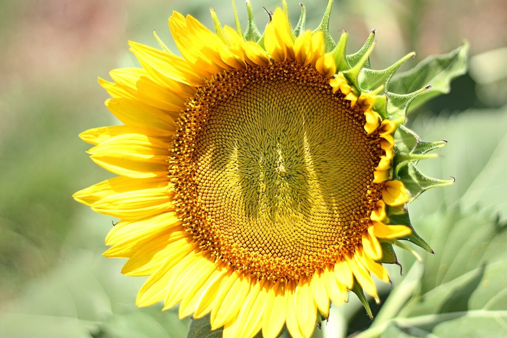
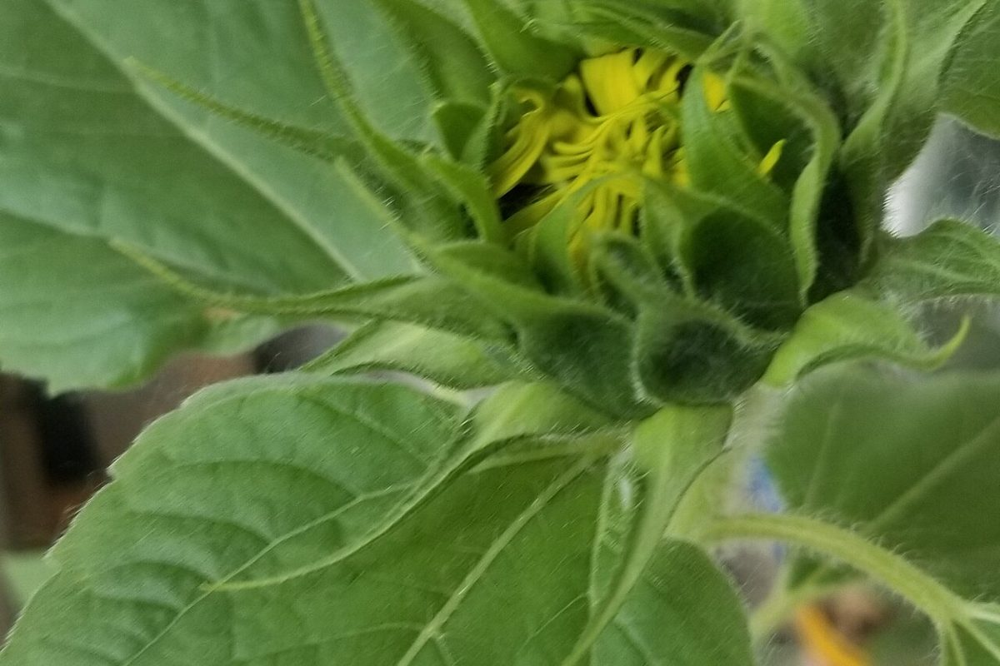

陽葵ひまり

制作側の連想
137.5度ずつ回して、種をまく。
お店の名前の由来は分かりません。制作側は、「ひまり」という音の近さからひまわりを連想しました。ひまわりの花の中心では、種が「137.5度ずつ回して置く」という並び方をしているそうです。このサイトでは、その並びで置いた点を5つのページへの目印にしています。お店の理念や由来とは無関係の、制作側の連想です。
右の図の黄色い点を押すと、各ページへ移動できます(1ホーム・2店のこと・3メニュー・4口コミ・5アクセスの順ではなく、点の並び順です)。
イメージ
種のまわりの、空と葉。
写真は館林市やお店のものではありません。国外・撮影地不明のフリー素材です。



ご案内
お店のこと(確認できたものだけ)
| 所在地 | 〒374-0026 群馬県館林市新宿1丁目12-10 |
|---|---|
| 電話 | 0276-58-0266 |
| 営業時間 | 準備中 |
| 定休日 | 準備中 |
| ご予約 | 準備中 |
| 駐車場 | 準備中 |
| SNS | Instagram @himari12.10 |